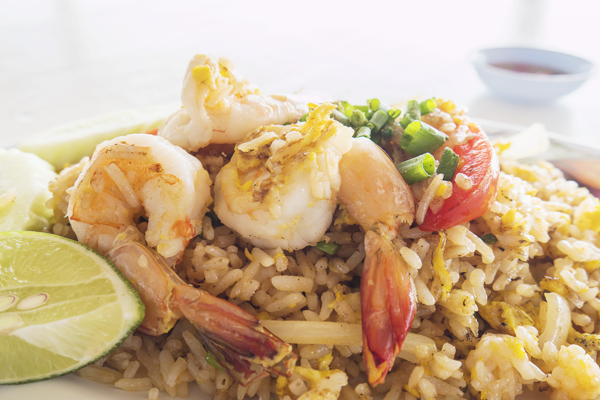

Shrimp Fried Rice

- Ingredients
-
- 1 1/2 cups uncooked white rice
- 3 cups water
- 4 tablespoons vegetable oil
- 1 cup fresh bean sprouts
- 1/2 cup chopped onion
- 1 1/2 cups cooked medium shrimp
- 1/4 cup chopped green onion
- 2 eggs, beaten
- 1 teaspoon salt
- 1/4 teaspoon ground black pepper
- 4 tablespoons soy sauce
- 1/4 teaspoon sesame oil
- Direction
-
- In a saucepan bring water to a boil. Add rice and stir. Reduce heat, cover and simmer for 20 minutes. Set aside and allow rice to cool.
- Heat a large skillet or wok for 2 minutes. When the skillet or wok is hot, pour in vegetable oil, bean sprouts and onions. Mix well and cook for 3 minutes.
- Mix in cooled rice and shrimp and cook for another 3 minutes. Stirring constantly.
- Mix in green onions, eggs, salt, pepper, soy sauce and sesame oil. Cook for another 4 minutes, stirring continuously, until eggs are cooked and everything is blended evenly.